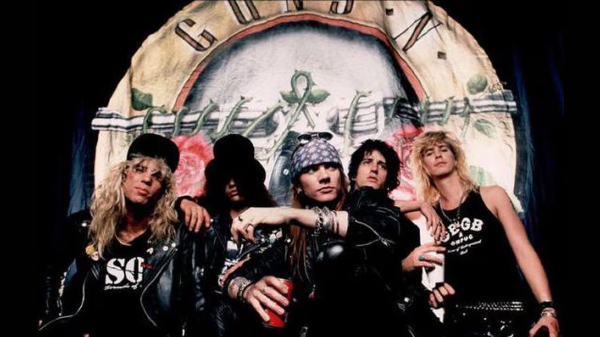

GUN'S AND ROSES
Es una banda estadounidense de hard rock formada en Hollywood, Los Ángeles, en la zona de Sunset Strip, en 1985. El grupo musical fue fundado por el vocalista Axl Rose y el guitarrista Izzy Stradlin. La banda fue formada en marzo de 1985 por Axl Rose (voz, teclados), Tracii Guns (guitarra líder), Izzy Stradlin (guitarra rítmica, coros), Ole Beich (bajo) y Rob Gardner (batería). Los cinco miembros originales eran de dos grupos diferentes, L.A. Guns (que más tarde fue reformado) y Hollywood Rose. Posteriormente, los miembros decidieron combinar los nombres de los dos grupos antes mencionados y así surgió el nombre Guns N' Roses. La década de su éxito fue de 1980 a 1990, pero siguen activos hasta el año 2023 teniendo diferentes integrantes durante las ultimas decadas.

Integrantes
- Axl Rose (Vocalista)
- Slash (Guitarra)
- Rítmico Richard Fortus (Guitarra)
- Dizzi Reed (Teclado)
- Frank Ferrer (Bateria)
- Duff Mckagan (Bajo)
Canciones más exitosas
- Welcome to the Jungle
- Sweet Child o' Mine
- Paradise City
- November Rain
- Don't Cry
- Knockin' On Heaven's Door